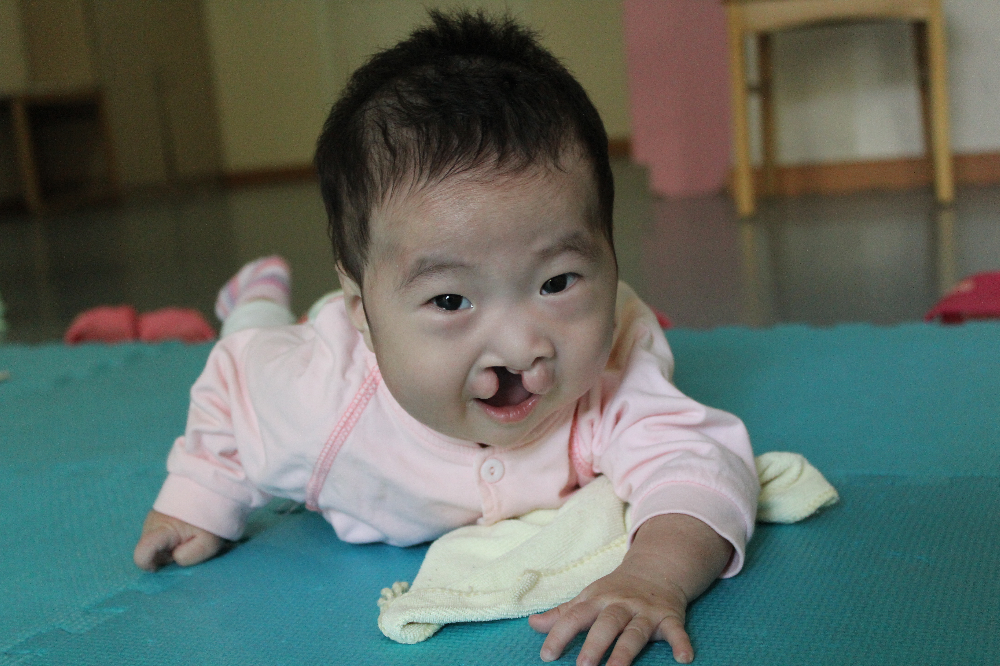

impact
Since April 2010, Harvard China Care, with support from our sponsors, has fully funded the operational costs of a special care unit at the China Care Home in Beijing. The unit serves as an interim residential care facility for medically fragile orphaned infants. There, specially trained staff provide round-the-clock care for the infants, both before and after their surgeries.
In just this past year, the impact the home has made has been tremendous. Since June, the unit has cared for 28 infants with severe medical conditions such as cleft lip/palate, spina bifida, or hydrocephalus. Many of them have undergone major surgeries and are now recovering. Our goal this year is to raise $35,000, which will cover the operational costs of the special care unit for another year.

Her Story
Miao arrived at the China Care Home early this year and had cleft lip and palate. She was a tiny girl, only 4kg in weight. Her health condition was not good and often had pneumonia when she was in the welfare institution. Unfortunately, due to her laryngomalacia and weak physical condition, surgery is currently too risky. She is currently back at the institution until she gets older for surgery. We're still hearing more about her story, and we hope we will continue to be a part of it. We hope you will too.